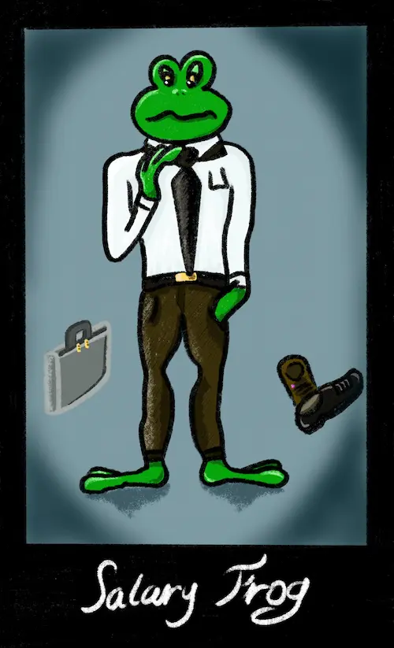
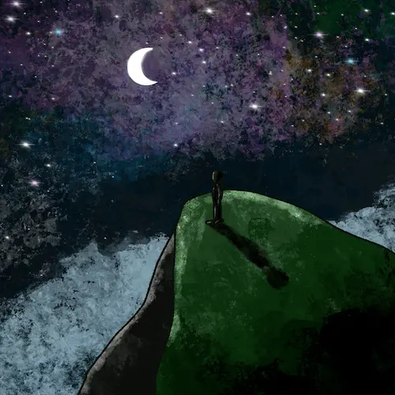

Inktober, première partie
Octobre est le mois de la création. Comme presque chaque année, le défi très connu de dessins à l’encre se déroulant à cette période nous fournit une liste de thèmes et un prétexte à pratiquer les arts.
J1 – Crystal / Cristal
Je plane. Je flotte. En effervescence.
Tout se bouscule et s’anime.
Dans ma tête…
Je suis quelqu’un d’autre. Ailleurs, dans ma transe,
Tout se bouscule et s’anime.
Crystal Meth.
J2 - Suit / Costume
Un personnage en costume, qui ne se sent pas très à l’aise. Il s’agit d’une grenouille, mais cela aurait tout aussi bien pu être autre chose. C’est la représentation du malaise d’être quelqu’un que nous ne sommes pas, de ne pas savoir qui nous sommes réellement, ni même s’il y a quelque chose, sous les nombreux masques que nous portons, qui est réel.
J3 – Vessel / Vaisseau
L’incarnation du vaisseau ici est le Capitaine Salamandre, Corsaire de la mare. Il s’agit d’un animal intense, prêt à en découdre, même avec les roseaux s’il le faut. Un peu farceur sur les bords, tout de même :D.
J4 – Knot / Nœud
Le crépuscule étire ses phalanges crochues vers mon âme. Seul, perdu, je contemple alentour les hordes de tourments. Il n’y aura pas de salut, aucun mot ne saura soulagé. Il n’y aura que l’absence, toujours.
Déjà, les fibres du destin caressent ma nuque. Un pas me sépare de celui que je suis. Un pas, et ma vie coulisse.
J5, 6, 7 et 8 – Raven, Spirit, Fan, Watch / Corbeau, Esprit, Ventilation, Regarder
Le vent souffle, tournoie et s’enroule, contorsionné sur lui-même.
Au sol, un corbeau. L’herbe dort sous ses serres. Aucun insecte, aucune radicelle ne respire.
L’œil vif et la tête haute, l’oiseau regarde au-delà des tourbillons de brindilles et de feuilles qui l’encerclent. Il guette.
Soudain, une ombre s’avance. Elle glisse vers l’animal qui lance un croassement lugubre. Un éclair bleuté traverse ses iris, les noirs se fondent.
Leurs battements d’ailes rabattent les bourrasques à terre. La plaine désormais déserte se fige pour de bon.
J9 et 10 – Pressure, Pick / Pression, Sélection
Le moment approche.
Nous sommes alignés devant eux. Leurs yeux courent sur nos épaules, sur nos jambes. Je tressaille devant cet air décidé qu’ils affichent. Une perle roule dans mon dos. Ma gorge sèche ne m’empêche pas de déglutir.
Seigneur, un regard se pose sur moi ! Je suis le prochain…
L’allure fière, le capitaine prend une inspiration avant d’ouvrir la bouche. Il va prononcer son jugement.
Mon nom franchit ses lèvres.
Je suis le prochain joueur de son équipe !
J11 et 12 – Sour, Stuck / Amer, Coincé
Aux premières lueurs, je m’accroche ardemment.
J’aurais dû t’oublier depuis longtemps;
Ton regard, ta voix,
Ton sourire qui ne m’appartient pas.
Et tes caresses et tes baisers parfois…
Je n’en aurai pas.
Est-ce encore l’amour, s’il mène au néant ?
Aux premières lueurs, je m’accroche ardemment.
J13 - Roof / Toit
Quelqu’un sur la colline contemple le toit du monde et rêve au voyage, à la nouveauté, à la paix et à la solitude salvatrice.
J14 – Tick / Tic Tac
Sinistrés, affamés,
Ils cherchent l’espoir.
Parqués, anonymés,
On ne veut pas les voir.
Des murs, des barbelés.
Pour nous préserver : les armées.
Tic tac, tic tac…
Submergés, partis en fumée,
Adieu nos villages richement parés.
La mer, la terre, l’air,
Se déchaînent au fur et à mesure.
Course folle aux ressources, conflits armés
N’étaient que les prémices des exilés.
Qui donc est piégé et se perd
Derrière ses propres murs ?
Les peuples aveugles et sourds
Qui, par cupidité, ont négligé l’amour.
Tic tac, tic tac…
Nous avons torturé, exterminé le vivant.
Le monde devient hostile;
Pas un abri, pas une île,
Aucun refuge, ni même de barbelés, nos camps.
La terre se réveille et nous punis de nos péchés.
Nous voilà tous sinistrés, affamés.
J15 – Helmet / Casque
Un matin au réveil,
Sur le rebord de fenêtre
Une troupe veille.
Qui sont donc ces êtres
Aux allures de merveille ?
Fruits du charme, fruits du hêtre ?
Non, ce sont les glands du chêne
Qui posés sur des pièces d’ébène,
Forment un groupe de bons hommes
Portant fièrement leurs heaumes.
J16 – Compass / Boussole
Quand je suis perdue
Au cœur de la nuit,
Et que résonnent mes cris
À la solitude ardue.
Je suis ta voix.
Quand mortel est le coup
Sur mon âme frêle,
Que les vagues déferlent
Et inondent mes joues.
Je suis ta voix.
Comme un point dans la nuit
Tu éblouis le chemin
Qui me mène à la vie,
À prendre ta main.
Toi, ma voie.